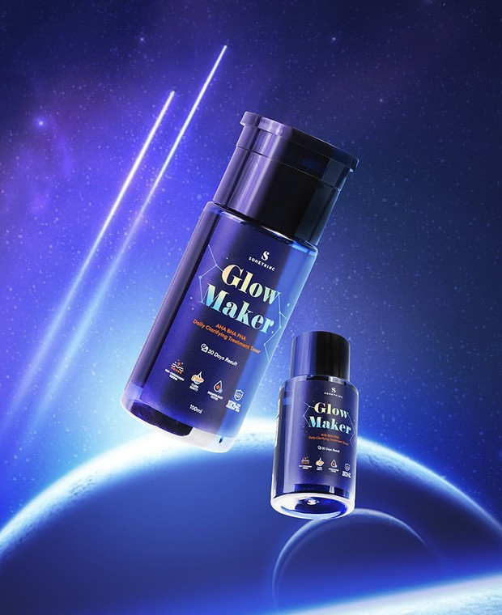

Somethinc GLOW MAKER AHA BHA PHA Clarifying Treatment Toner

MAKE YOUR OWN GLOW IN 30 DAYS WITH #GLOWMAKER!
Daily Exfoliating Toner for Beginners
Glow Maker adalah exfoliating toner baru dari Somethinc. Exfoliating toner dari Somethinc ini sifatnya mild, karena memiliki kandungan bahan aktif dengan persentase yang rendah sehingga aman digunakan setiap hari.
Setiap harinya, kulit kita
beregenerasi dengan melepas sel-sel kulit mati. Jika sel kulit mati dibiarkan menumpuk dan tidak dibersihkan, maka sel-sel kulit mati tersebut dapat menimbulkan masalah.
Terutama masalah seperti whitehead dan blackhead, jerawat, tekstur kulit yang kasar, hingga timbul kerutan halus. Selain itu, untuk kamu yang memiliki kulit kusam atau warna kulit yang tidak merata, Glow Maker bisa jadi penyelamat. Hal ini disebabkan karena Glow Maker mampu mengangkat sel-sel kulit mati, kotoran, dan sebum berlebih di kulit.
Star Ingredients dan Manfaat
Kenapa Glow Maker bisa membantu mengatasi begitu banyak permasalahan kulit? Karena Glow Maker diperkaya dengan segudang bahan-bahan yang juga kaya akan manfaat.
Sebagai eksfoliator, Glow Maker mengandung AHA 3%, BHA 0,01%, dan PHA 0,1%. Karena dosisnya yang rendah, produk ini bersifat mild dan merupakan gentle exfoliator. Formulasi ini efektif untuk membersihkan kulitmu dari penumpukan sel-sel kulit mati dan aman digunakan setiap hari.
Selain itu, Glow Maker juga mengandung Arginine, Betaine, dan Allantoin untuk melembapkan serta berfungsi sebagai anti aging. Caffein dan Roman Chamomile Extract bekerja sebagai antioksidan serta mampu menenangkan peradangan pada kulit.